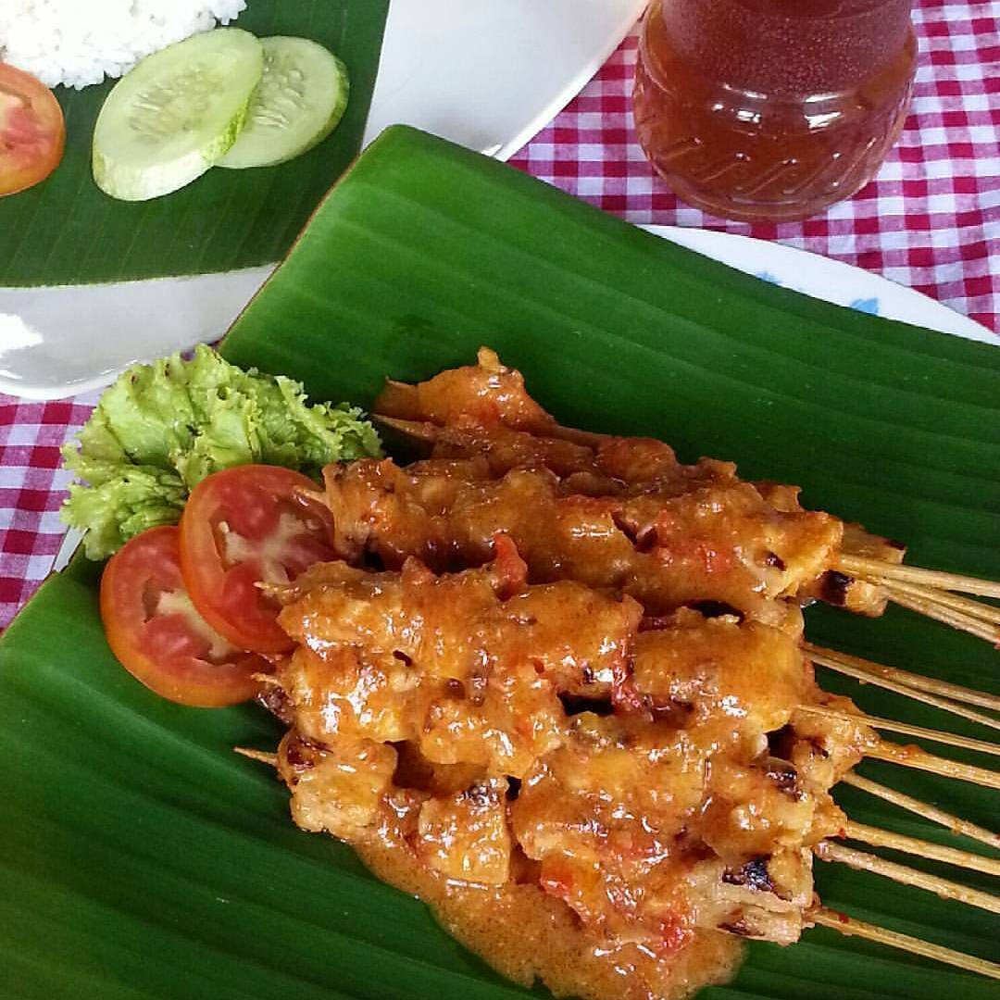

ini salah satu kuliner khas Rembang jateng, meski dgn bumbu2 yg simple tp rasanya endess... 👌
mungkin banyak versi bumbu sate ini, dan ini yg paling simple menurut sya.
Bahan-bahan untuk membuat Sate Ayam Srepeh:
- -600 gr fillet ayam,potong kotak 3 cm
- -3 gelas santan kental
- -garam dan air jeruk nipis utk merendam daging ayam
bumbu yg di haluskan :
- -15 cabe merah besar
- -10 butir bawang merah
- -5 butir bawang putih
- -4 butir kemiri
- -1 sendok teh gula merah
- -1 sendok teh gula pasir
- -1 sendok makan air asam jawa
- -secukupnya garam bila suka penyedap
Langkah-langkah:
- 1.Ayam di cuci bersih, potong uk 3x3 cm, krn nnti akan menyusut jika sdh matang. rendam dgn garam dan air jeruk nipis kurleb 15 menit
- 2.Tusuk daging ayam tadi kira2 5-6 iris per tusuknya
- 3.Bumbu di haluskan semua, kecuali gula merah dan air asam jawa
- 4.Tumis bumbu halus sampai harum, lalu masukkan santan kental, aduk rata, masukkan gula merah gula pasir garam dan air asam jawa
- 5.Lalu masukkan ayam yg sdh di tusuk tadi, sampai terendam ayamnya, aduk2, ungkep sebentar sampai bumbu meresap dan ayam matang
- 6.Kira2 40 menit, sampai santan mengental dan menyusut, lalu matikan api
- 7.Bakar sate tadi di atas bara api, cukup sampai kecoklatan sja
- 8.Lalu tata di atas piring saji, siram bumbu lebihan ungkepan tadi.
- 9.Siap di hidangkan bersama nasi hangat